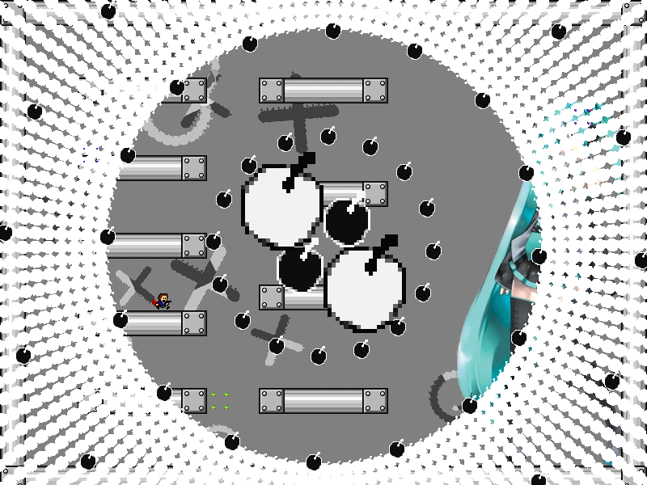
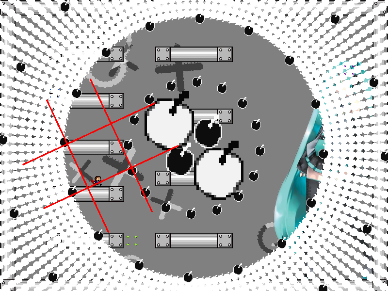
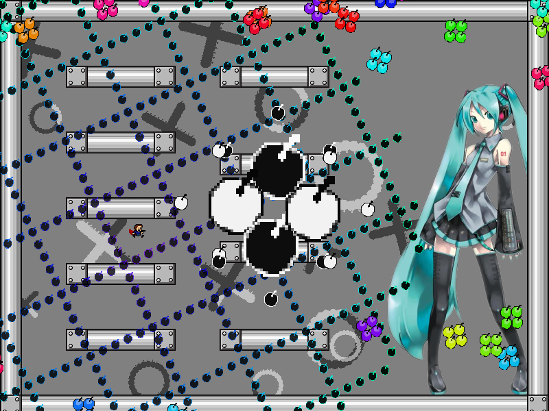
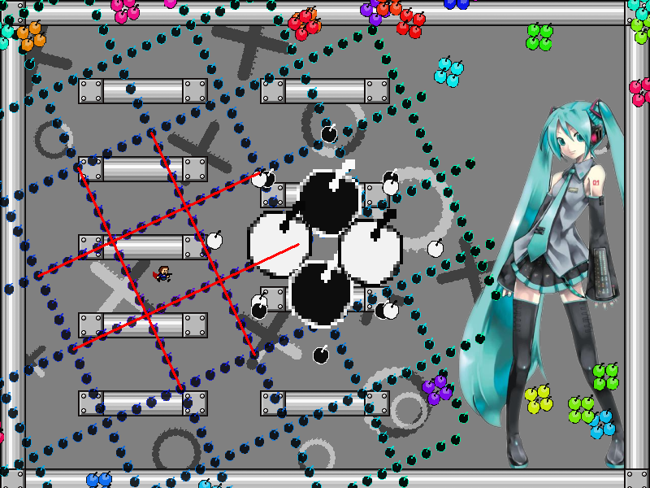

chapter6 - section4

| creator | segment | label | jump |
|---|---|---|---|
| NN | 1:20.80~1:22.40 | R*A/Q+Q | double |
6-1~6-3の解答に対応する弾幕です。
背景演出の色の切り替わりから、格子状弾幕の形状を予測することを目的としています。
6-1開始以降存在している〇型弾幕と✕型弾幕の背景演出に関して、これらの色が白から黒または黒から白に切り替わることがある境界線が存在しています（fig.6-4.1.a, fig.6-4.1.b）。


6-4における格子状弾幕についてはその境界線に沿って生成されます（fig.6-4.2.a, fig.6-4.2.b）。

